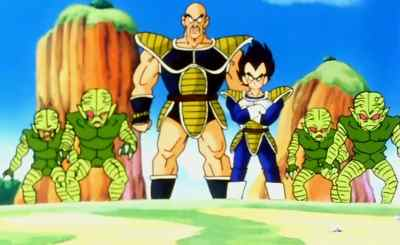
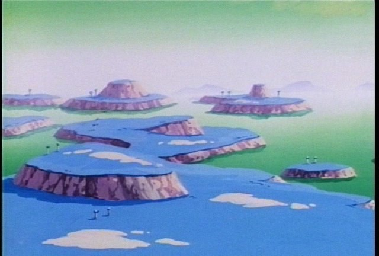
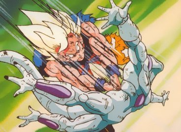
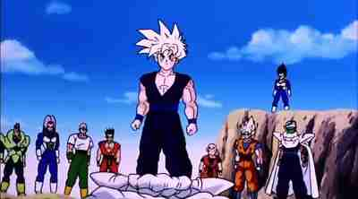

This page is to detail the important events of Dragonball Z, I will start with a basic run down of Dragonball.
Dragonball
A man named Gohan found a peculiar little boy who had a tail in the woods one evening. This boy he decided to name Goku. Gohan was a master of Martial arts being trained by the world renown, Master Roshi. Master Roshi was the creator of the Kamehamehameha technique. A giant blast that can destroy anything in it's path. With Master Roshi's training, Gohan then tutored this small boy in Martial Arts. While defending the house from a giant creature, Gohan lost his life and Goku was forced to live by himself. Goku termed Gohan as his Grandpa, and his final memento to Goku was one of the legendary Dragonballs. A girl by the name of Bulma shows up on Goku's doorstep looking for the dragonballs. Together, they decided to look for them. Along the way of pursuing these seven magical dragonballs, Goku and Bulma meet Yamcha, Puar, Tien, Krillin, Tien, Master Roshi, Chi Chi, Ox King, and many more people.(For biographies look at the Characters page)
Goku starts to grow up when an evil being is brought once again into existence. King Piccolo. King Piccolo tries to take over the world and be the tyrant who is in charge. One of King Piccolo's children kill off Krillin and sends Goku into a rage like none other. He finds and eventually kills King Piccolo. However, King Piccolo before he dies, spits out an egg that carries his essence. Goku prepares himself to fight his essence. After a long fight at the World Martial Arts Tournament, Goku defeats King Piccolo's reincarnation and marries Chi Chi. They are then not seen til the beginning of Dragonball Z.
Dragonball Z, A saiyan?
We see that Goku is back as an adult with his own child he has named Gohan, after his Grandpa. He visits his friends 5 years after the defeat of Piccolo. While there however, a mysterious and strong fighter enter into the party. This fghter introduces himself as the brother of Goku, and the Goku's real name is Kakarot. Goku is an alien called a Saiyan. A race of fighters who have only one goal, to keep fighting til they die. Goku was sent to Earth originally to take it over for the Saiyans.
This brother asks Goku to join him in destroying humanity and to take over the planet like he was originally intended to do. Goku refuses and in response, Raditz, Goku's brother takes Gohan and runs saying that the only way to see his son again, is to kill 100 humans and then bring them to Raditz. Piccolo, the reincarnation of King Piccolo, overhears and together they challenge and defeat Raditz. Unfortunately Goku sacrificed his life to protect Gohan. After the defeat of Raditz, Piccolo overhears that Raditz sent information to his group. These were 2 additional saiyans and that in a single year, they would arrive on Earth. Piccolo takes Gohan in order to train as the friends of Goku search for the dragonballs to ressurect Goku in order to defeat the oncoming Saiyans.
1 Year later and Piccolo and Gohan are ready to take on the saiyans. Krillin, Tien and Yamcha join in on the action. In the fight, Yamcha, Tien, and Piccolo get killed by the saiyan's onsalaught. Goku was training with King Kai, a Kai who was over the North quadrant of the universe. He learned a few techniques for the saiyans. Goku arrives to the battle after the death of Yamcha and Tien. Goku quickly defeats one of the saiyans and has a dramatic battle with the second one who is revealed to be the prince of all Saiyans. Prince Vegeta gets into a stalemate and eventually leaves all together.
Namek
At the end of the battle Goku was beat up badly and went to the hospital as Gohan and Krillin learned about Piccolo being the link to the Dragonballs. With Piccolo dead, the dragonballs were gone. However, they learned of a new planet, planet Namek. Namek was where the dragonballs originated from. With help from Bulma, Krillin and Gohan went after the dragonballs. After Goku was healed he went soon after following them towards Namek.
After reaching Namek, Goku saw that Gohan and Krillin had teamed up with Vegeta. They teamed up to defeat the evil Freeza. A tyrant who is in the business of owning planets. Goku helps defeat Freeza's specialty squad, the Ginyu Force but it used up all his energy. Vegeta put him into a rejuvenation tank as Gohan and Krillin used the dragonballs to resurrect Piccolo. Freeza finds out that Gohan and Krillin used the dragonballs and battles them. Goku eventually get healed as he enters into the battlefield to see Freeza kill Vegeta. Krillin dies soon after sending Goku into a rage that has not been seen before unlocking the legendary power of the Super Saiyan, a transformation that can only be acquired through emotional trauma and one with a pure heart. Goku defeats Freeza and is stuck on Namek while everyone else is teleported back to Earth by the Dragonballs.
Cyborgs
1 year later Freeza makes an appearance on Earth just to be taken down by a man from the Future named Trunks. He has come to warn Goku about a threat. When Goku touches down on Earth, Trunks takes him quickly to the side and warns him of cyborgs that would destroy the world in 3 years. Goku is also given medicine for a heart virus that will strike him at about the same time as the cyborgs attack. Goku lets Trunks leave after finding out he is the son of Vegeta and Bulma.
3 years of training later the cyborgs arrive. Goku and the gang meet them and fight them. They are defeated by the androids that Trunks warned them about. Goku falls ill of the heart virus in the middle of the fight and taken home. In the process of finding out a way to destroy the androids, a creature named Cell makes an appearance. Cell absorbs the androids and becomes a much more powerful weapon. Goku and Gohan train together in preparing for the fight against Cell. At the climax of the fight, Gohan unlocked the super saiyan 2 transformation and obliterated Cell. Goku died in the fight of Cell.
Majin Buu
7 years after the final fight with Cell, Gohan attends high school for the first time. He becomes a super hero known as the Great Saiyaman. While trying to hide his identity, a girl named Videl finds out and in order to prevent her from revealing her secret he gets blackmailed into joining the next martial arts tournament. While there he gets attacked by some nameless men for his energy. Then he meets the Supreme Kai. The Z fighters leave the tournament to go on a mission with the Supreme Kai. There is a being made of nothing but pure evil and his name is Majin Buu. Supreme Kai lost the other Kais to a battle against Majin Buu. The wizard Babidi is trying to control Majin Buu after Babidi's father sealed him into a shell. Gohan, the temporarily alive Goku, and Vegeta all join to fight the power of Buu and all fail. Goku teaches Goten, the second son of his, and the current Trunks how to fuse together. After a lot of fights, Buu is eventually brought down with a Spirit Bomb by Goku, a technique taught to him by King Kai. The Earth is then safe once again.